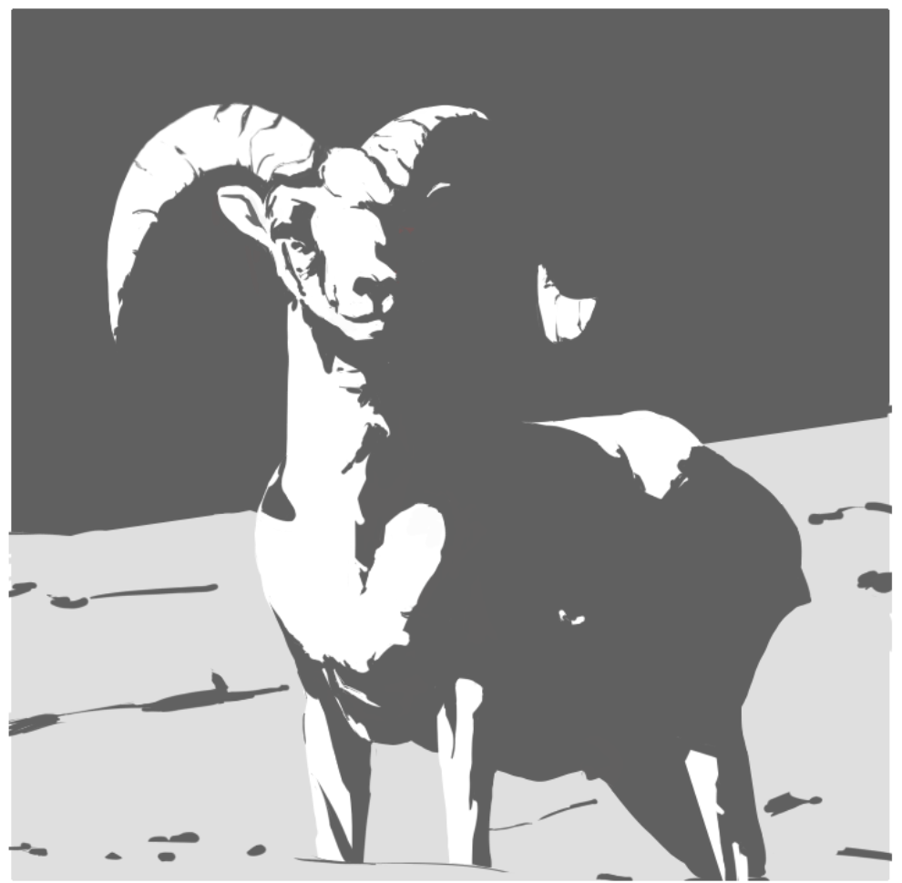
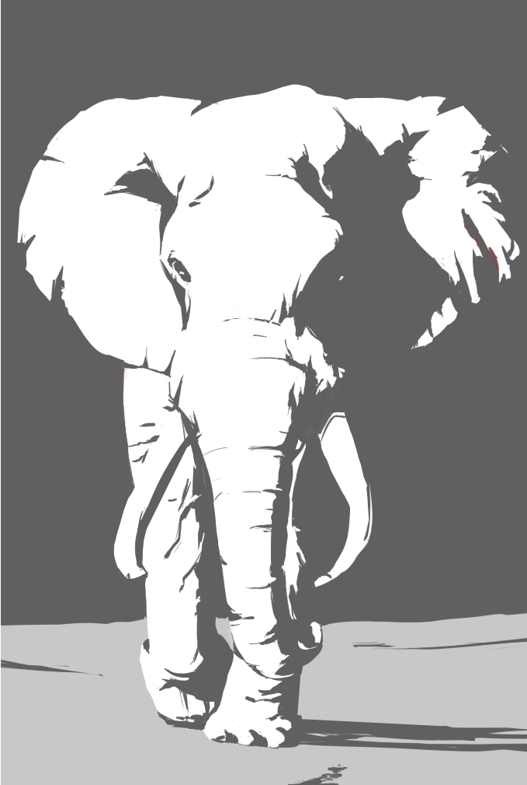

Krenz色彩 L2 作业笔记
这周有很多收获，下周会有更多。我现在最缺的就是继续赶上去绘画时间，不再拖延。
A
很恐怖，家人们。
第一周只是尝鲜，第二周开始对我重拳出击了。做的非常痛苦，但这才意味着它有意义。
老实说，我做到这里就是极限了……我确实是体会到什么叫设计了……这做完大型后几乎完全是设计了（大型同样是设计）——

然后则是做小形状——把整的东西给切碎。小形状优先做到视觉中心——头，角，然后再在胸，背部上的明暗交接线左右做细节。
做细节一般是围绕明暗交界线——去细化明暗交界线的形状，去在亮面切一些暗的点线面，在暗面切一些亮的点线面（这个做的很少，主要是为了体现材质，反光……）
使用何种形状，似乎也是可以形式化的，而非完全去进行探索。三角形是一个重要的形状：三角形是宽窄变化图形的最小单位，条形会容易出现平行线，有刻意规律的感觉，因此不够自然。

然后这只大象……哈哈哈我也不知道我在画什么，总之我在玩儿。做这只大象的形状的时候我有故意地：
- 让两只耳朵的形状复杂度不一致，强化光源方向的印象
- 象鼻子上用了大量努力去表现大象身上的纹理，同时用环绕线去暗示体积感

其实还挺快乐的，但我不知道我过不过的了哈哈哈。
A02则……我完全完全没有底，我都不知道我在画什么。
这里，再次，再次，再次去强调——我作形状，不是去再现所画之物，而是去表现所画之物，我的形状应当有主动的设计，主动的设计啊！在衣褶上，更是如此。我注意到我稍不注意就又陷入到了拷贝物体的境地。
但明显，我确实不知道我如何去作形状……在动物身上还好说我可以瞎编，但在衣褶上？衣服就长那样，我还真没想法在看上去像原图的情况下做太多自己的发挥……我确实做了自己的发挥，但我也发现了自己的临界点……我需要一些方法论，一些我可以实操的形式化的方法。


我准备，等我做完所有B作业，就再回过头来做A作业剩余的图，其中：
- 不使用网格帮忙抓型（网格确实方便，考虑这个练习的目的，形准确实应该作为前提让我专心思考形状，但……just for fun）
- 我要去研究一下如何形式化形状，我得去看点构成课程（有趣的是，我曾经以为构成即构图，没这么远啦）
- 找一张参考图做四次——用不同种类的形状，去表达它原样的感觉，毛茸茸的感觉，石膏的感觉，木头的感觉……
结果A01直接就过了，A02要求我改的地方是我完全没料到的地方……我觉得老师改的未免有点宽松吧？
B01
B01 这个作业大概是提前体验一下上色全流程。但同时也再次是一次二分的练习（感觉是简单版）。
我注意到我提的问题都是空间结构的，是我能不能画出来且画的能看，而至于我画的东西去表达什么……？我目前还分不出精力去思考。这是非常正常的。
这个作业……放到L3里吧，在L2这段时间里我没画完，只做了节点一。
B02
B02才是真休闲吧？
但我做的还是有问题——石头和帽子的挂饰，我沉进去细节里了，结果放大了看好像挺有信息量，但用正常大小去看，只觉得是一堆毛边儿，我要意识到，我如果要做什么细节，它应该是观者在正常的画幅下就能够看出来的，如果正常的画幅看不出来，那这种细节就属于无效细节，对画面的整体没有贡献，反而起反作用（让形状毛糙）。细节必须是属于整体的细节，而不能唱自己的独角戏！
总之，检查这个就是——在一个能看到整个画面的缩放下，检查我做的细节究竟能不能看出来，有没有意义？这就像手游会放更大的UI更大的按钮。
本博客所有文章除特别声明外，均采用 CC BY-NC-SA 4.0 协议 ，转载请注明出处！